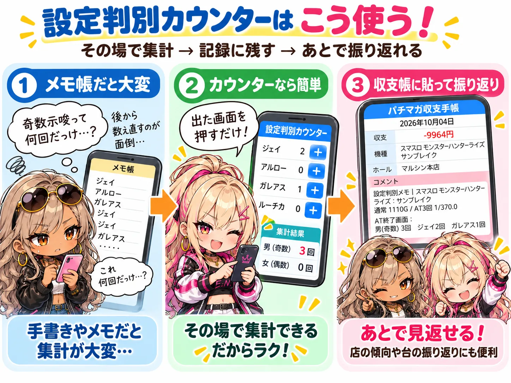

設定狙いをしていると、AT終了画面やトロフィーなど、いろいろな設定示唆が出てきます。
その場では覚えていても、あとになって「奇数示唆って何回出たっけ？」「ジェイとアルロー、それぞれ何回だった？」と分からなくなることがあります。
そんなときに使えるのが設定判別カウンターです。この記事では「スマスロ モンスターハンターライズ：サンブレイク」を例に、どんな場面で便利なのかを紹介します。
設定判別カウンターとは
実戦中に出た設定示唆や当選回数を、タップで記録していくツールです。
機種ごとに、解析で分かっている示唆の項目があらかじめ並んでいます。出たものを押していくだけで、「何が何回出たか」を一覧で確認できます。入力した内容はスマホの中に保存されるので、途中で画面を閉じても消えません。
メモ帳だと、あとから集計するのが大変
たとえばモンハンサンブレイクのAT終了画面では、次のように示唆が分かれています。
- ジェイ・アルロー・ガレアス：奇数設定期待度UP
- ロンディーネ・ルーチカ：偶数設定期待度UP
これをメモ帳に残すなら、「ジェイ → ガレアス → ロンディーネ → アルロー → ジェイ……」と、出るたびに名前を書き足していくことになります。
記録自体はできます。ただ、見返すときには「ジェイは何回？」「ガレアスも足すと奇数は合計何回？」と、もう一度数え直さなければいけません。同じ奇数示唆でも画面が3種類あるので、回数が増えるほど手間になります。

カウンターなら、出たものを押すだけ
設定判別カウンターなら、終了画面を見たら該当する項目を押すだけです。
覚える → メモする → あとで数え直すのではなく、出た → 押すで済みます。
回数はその場で集計されるので、実戦中でも「今日は奇数寄りかな」といった全体の傾向をつかみやすくなります。
記録を収支帳に残すメリット
実戦が終わったら、カウンターの「テキストをコピー」または「収支帳用にコピー」ボタンで結果をコピーし、収支帳のメモ欄に貼っておくのがおすすめです。
コピーしたテキストには、キャラごとの回数に加えて、奇数・偶数の合計も自動で入ります。数え直す手間はありません。
収支と一緒に残しておけば、数週間後でも「あの日の台、示唆はどうだったっけ？」とすぐに見返せます。
後から振り返れることの価値
今は分からない情報が、あとで意味を持つことがある
2026年10月時点では、モンハンサンブレイクのAT終了画面について、設定ごとの詳しい出現割合はまだ分かっていません。
だからこそ、今のうちに記録しておく意味があります。あとで解析が出たときに見返せば、「あの台は実はかなり良い示唆だった」と分かるかもしれません。逆に、思っていたほどではなかったと分かることもあります。
お店を振り返る材料にもなる
新台初日に打った台の示唆を残しておくのも、一つの使い方です。
あとから「あの日は高設定だった可能性が高そう」と分かれば、「この店は新台初日に設定を使うことがあるのかも」と考える材料になります。
もちろん、1台だけでお店の傾向を決めつけることはできません。それでも、記録がなければ振り返ることすらできません。収支だけでなく「その日に何が起きていたか」も残しておく。それが積み重なると、立ち回りを考えるためのデータになっていきます。
まとめ
設定判別カウンターの良さは、大きく2つです。
- 出た示唆を、押すだけでその場で集計できる
- 結果を残しておけば、あとから解析やお店の傾向と照らし合わせて振り返れる
設定示唆は、その場で設定を考えるためだけのものではありません。記録して残しておけば、情報が増えたときにも使えます。
▶ スマスロ モンスターハンターライズ：サンブレイク 設定判別カウンター
※設定判別カウンターは設定を断定するものではありません。実戦中の設定示唆や回数を、記録・整理するためのツールです。